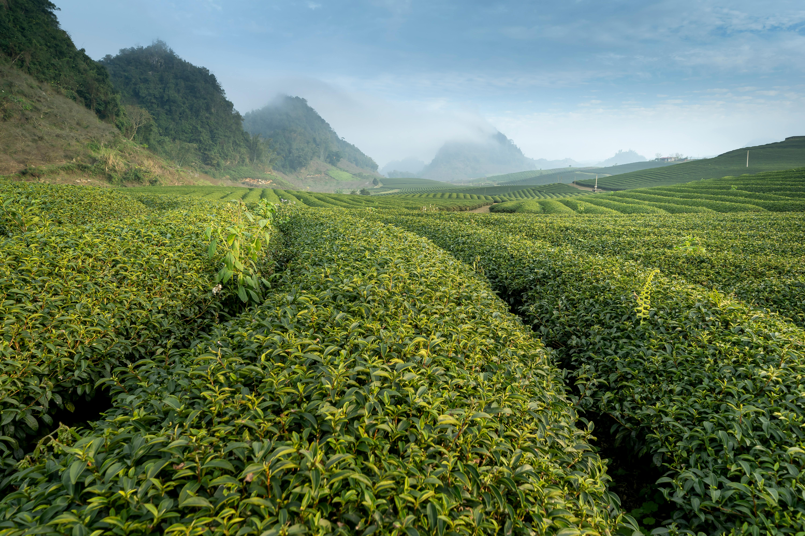
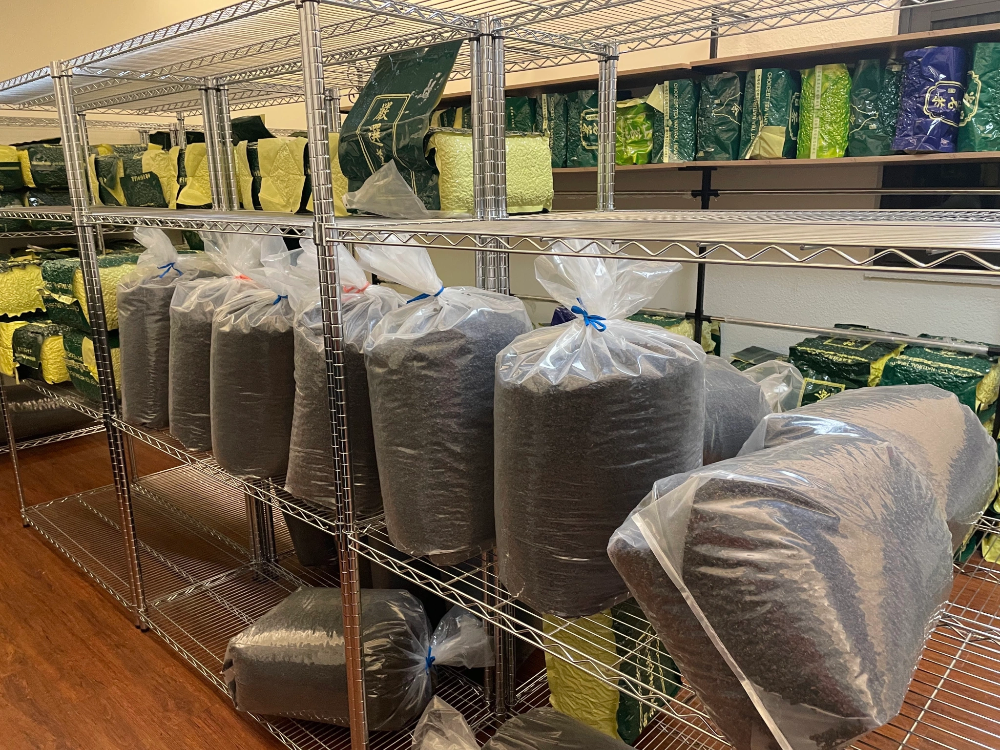
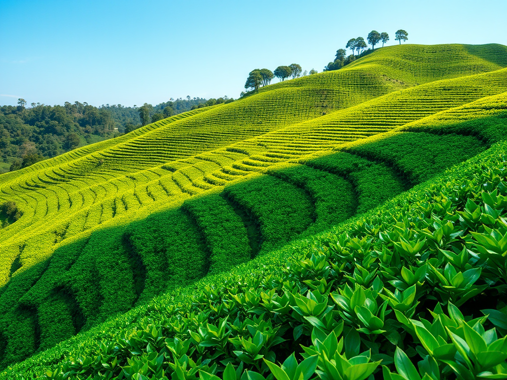

重要公告 Important post
暫無公告
關於 About us
讓每一杯茶，承載文化與初心，華庭將與您共赴一場品味之旅。
華庭茶葉有限公司是一家致力於傳承中華千年茶文化，並融合現代消費需求的專業茶葉企業。自成立以來，我們始終秉持「傳承茶道，創新未來」的核心理念，以卓越的品質、豐富的產品線和深厚的文化內涵，為消費者帶來獨特的品茗體驗。

華庭茶葉有限公司成立於1980年，起源於對茶文化的深刻熱愛與責任感。我們的創始團隊由多位茶業專家和文化愛好者組成，他們懷抱著推廣中國茶文化的使命，從一個地方品牌逐步成長為擁有國際影響力的茶葉企業。
「華庭」的名字象徵著「華美庭院，品味人生」，寓意以茶為媒介，連結自然與人文，締造雅致的生活方式。我們深信，一杯好茶不僅能帶來味覺的享受，更能傳遞心靈的慰藉與文化的熏陶。
華庭茶葉致力於打造全品類、高品質的茶葉產品，滿足不同消費群體的需求。我們的產品涵蓋四大山頭，包括大禹嶺、杉林溪、梨山、阿里山，並延伸至紅茶、冷泡茶及功能性茶飲。

華庭茶葉的商品，皆是在地台灣茶種，品質安心且有保障。
品質是華庭茶葉的生命。我們擁有位於杉林溪的自有茶園，採用科學化管理，確保茶葉的自然生態種植。此外，所有茶葉都經過多重檢測，符合國內外食品安全標準。我們還傳承傳統製茶工藝，結合現代技術，確保每一片茶葉都能呈現最佳風味。
華庭茶葉注重茶文化的傳承與推廣，讓更多人了解中國茶的深厚底蘊。我們還積極參與公益事業，支持茶農社區的經濟發展，並推行可持續種植模式，為環境保護貢獻力量。
華庭茶葉目前設有經銷商網絡，並通過電子商務平台將產品銷往全球。我們的目標是在未來五年內，成為國際領先的茶葉品牌，讓更多人通過華庭的茶品感受中國茶文化的魅力。
華庭茶葉有限公司始終以消費者為核心，以品質為基石，以文化為靈魂。我們致力於打造的不僅僅是一片茶葉，更是一種生活態度和文化體驗。歡迎加入我們的品茗之旅，讓茶香伴您走過每一段美好時光。

農產品產銷履歷履歷 — 楊清雄
前往商品體系 A system of goods
向右滑動查看更多 >>
茶葉
飲品
茶具
據點分佈 Place
立即來電訂購、諮詢！
0937-780661 楊小姐
0918-000530 楊小姐